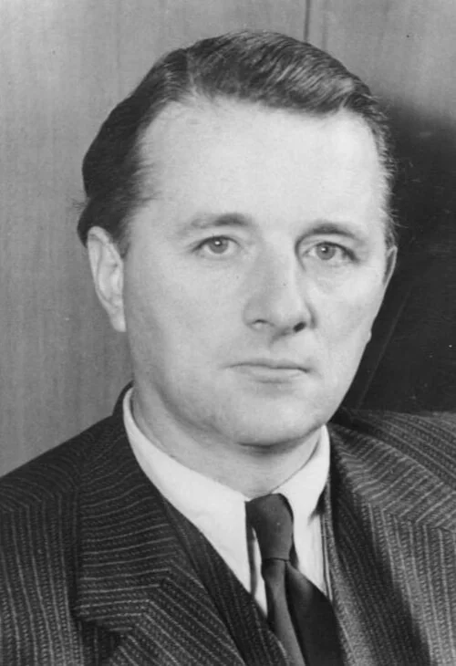
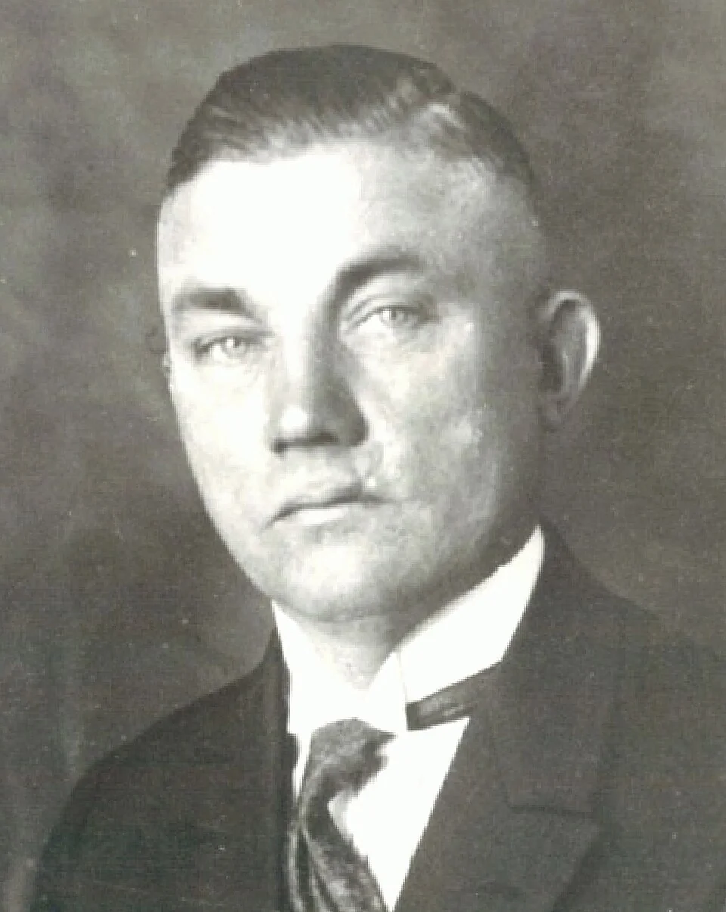
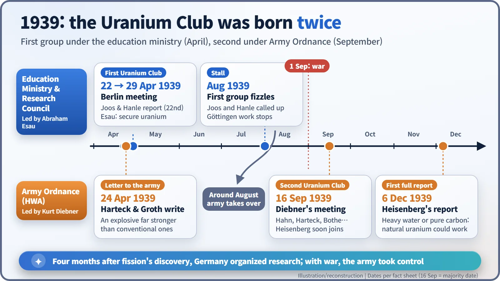

Nuclear History · 068
The Country That Found Fission Moved First — Germany's "Uranium Club" (1939)
Within months of fission's discovery, Germany had a research group in spring and an army-run programme by autumn.
Barely three months after nuclear fission was announced from Berlin, German scientists were alerting their government to its uses. In April 1939 an education-ministry meeting created the informal "Uranium Club"; that same week two Hamburg chemists warned the army of a possible new explosive. After war broke out in September, Army Ordnance took over and relaunched the group.
A letter in April
"We take the liberty of calling to your attention the newest development in nuclear physics, which, in our opinion, will probably make it possible to produce an explosive many orders of magnitude more powerful than the conventional ones. … That country which first makes use of it has an unsurpassable advantage over the others."
Those lines come from a letter that two chemists at the University of Hamburg, Paul Harteck (1902–1985) and his assistant Wilhelm Groth (1904–1977), sent to German military authorities on 24 April 1939. The wording is the English translation quoted in later histories; we were not able to check the German original. Nuclear fission had been public for barely three months. In the country where it was discovered, letters like this were already on their way. [1] [6]

Fission's home ground
On 6 January 1939, Otto Hahn and Fritz Strassmann in Berlin published their finding that bombarding uranium with neutrons produced barium. Lise Meitner and Otto Frisch soon explained it as the nucleus splitting in two: fission. By March and April, experiments showed that each split also released two or three fresh neutrons. If those neutrons could split further nuclei, a chain reaction was no longer a fantasy.
Germany started from a strong position. The discovery had come from a German institute; the country had world-class theorists such as Werner Heisenberg (1901–1976) and a powerful chemical industry. And since annexing the Sudetenland in 1938, it controlled the uranium mines of St. Joachimsthal (today Jáchymov in the Czech Republic). [2]
April: the education ministry gets there first
The first move came from a university. In April 1939 the Göttingen physicist Wilhelm Hanle gave a colloquium talk on an Uranmaschine, a "uranium machine", or what we would now call a nuclear reactor. On 22 April, Hanle and his colleague Georg Joos told the Reich Ministry of Education that nuclear energy might have military and economic uses.
Their report reached Abraham Esau (1884–1955), head of physics at the Reich Research Council, who called a meeting in Berlin on 29 April. Walther Bothe, Hans Geiger, Wolfgang Gentner, Robert Döpel, Gerhard Hoffmann, Joos and Hanle attended; Otto Hahn, the discoverer himself, was not there. According to German accounts, the meeting agreed to pursue a uranium reactor, to secure the uranium stocks inside Germany, and to bring leading nuclear physicists together in one working group. Informally it became known as the first Uranverein, the "Uranium Club": a nickname, not an official title. [2] [3]

Outsiders noticed. A famous letter written in the United States on 2 August 1939 included the line: "I understand that Germany has actually stopped the sale of uranium from the Czechoslovakian mines which she has taken over." [5]
The same week: a letter for the army
Harteck and Groth's letter went out five days before Esau's meeting. Sources name its addressee differently, as the Reich War Ministry or the Army Ordnance Office, but they agree it went to the military side. Where the education-ministry group leaned towards reactors and energy, this letter spoke from the start about an explosive and about the advantage of whoever used it first. It received no reply until August. [1]
A summer stall, then September
The first group did not last. In August, Joos and Hanle were called up for military training and other war work, and the Göttingen effort stopped. Around the same time the Army Ordnance Office (Heereswaffenamt, HWA) took over nuclear research from the Research Council; Esau protested and was ignored. The move was driven by the Ordnance physicist Kurt Diebner (1905–1964) and Erich Bagge. [4]
On 1 September 1939, Germany invaded Poland and the war began. On 16 September, Diebner held a meeting in Berlin. Bothe, Siegfried Flügge, Geiger, Hahn, Harteck, Hoffmann, Josef Mattauch and Georg Stetter were invited. This was the start of the second Uranium Club. Heisenberg, Carl Friedrich von Weizsäcker and others joined at a follow-up meeting soon afterwards. As Bagge later recalled, the aim was to "make all preparations to be able to answer beyond doubt the question of whether generating nuclear energy was feasible." Some German sources give 20 September for the first gathering, so the exact date is uncertain. [1] [2]
The Kaiser Wilhelm Institute for Physics in Berlin-Dahlem was also placed under Army Ordnance. Its director, the Dutch physicist Peter Debye, refused pressure to take German citizenship, left for the United States early in 1940 and did not return.

Reactor first, or bomb first?
The question the physicists faced in 1939 was surprisingly modest: is a chain reaction really possible? The neutrons released by fission are very fast. To split uranium efficiently you need a moderator, a material that slows neutrons down without swallowing them. Think of a bowling ball thrown so hard it skims past the pins; the moderator adds a little friction to the lane.
In a report to Army Ordnance dated 6 December 1939, Heisenberg calculated that with heavy water or very pure carbon as a moderator, even natural uranium could sustain a chain reaction. Later graphite measurements suggested carbon would not work, a result eventually traced to impurities in the sample, and German research leaned towards heavy water. [2]
What came next
The Uranium Club ran reactor experiments throughout the war but had not built a self-sustaining reactor by 1945; that story belongs to the war years. Why the German programme never came close to a bomb has long been debated, with some historians stressing limits of resources and organization and others the judgements and intentions of the scientists involved.
One thing is clear. Within a single year, the country that discovered fission turned it first into a national research agenda in spring and then into a military one in autumn. The clock of science and the clock of war had begun to tick together.